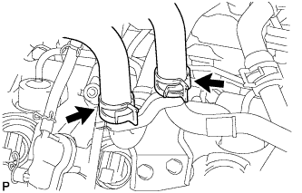
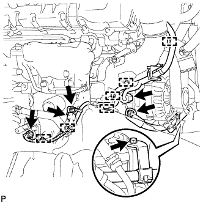
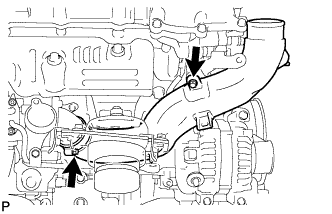
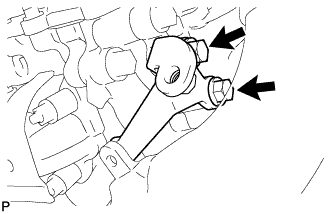
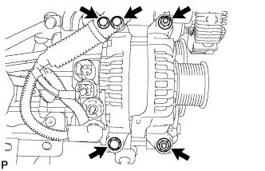

GENERATOR > REMOVAL |
| 1. DISCONNECT CABLE FROM NEGATIVE BATTERY TERMINAL |
| 2. REMOVE FRONT FENDER SPLASH SHIELD SUB-ASSEMBLY LH |
 |
Remove the 3 bolts and screw.
Turn the clip indicated by the arrow in the illustration to remove the fender splash shield.
| 3. REMOVE FRONT FENDER SPLASH SHIELD SUB-ASSEMBLY RH |
| 4. REMOVE NO. 1 ENGINE UNDER COVER SUB-ASSEMBLY |
 |
Remove the 10 bolts and under cover.
| 5. DRAIN ENGINE COOLANT |
Loosen the radiator drain cock plug.
Remove the radiator reservoir cap to drain the coolant in the radiator.
Loosen the oil filter bracket drain cock plug to drain the coolant in the engine.

Tighten the radiator drain cock plug by hand.
 |
Tighten the oil filter bracket drain cock plug.
| 6. REMOVE FRONT FENDER APRON SEAL FRONT RH |
 |
Remove the 3 clips and front fender apron seal front RH.
| 7. REMOVE FRONT FENDER APRON SEAL REAR RH |
 |
Remove the 4 clips and front fender apron seal rear RH.
| 8. REMOVE V-RIBBED BELT (w/ Viscous Heater) |
 |
Loosen the lock nut and turn the bolt counterclockwise.
Remove the V-ribbed belt.
| 9. REMOVE NO. 1 IDLER PULLEY (w/ Viscous Heater) |
 |
Remove the bolt, cover, No. 1 idler pulley and collar.
| 10. REMOVE NO. 3 IDLER PULLEY (w/ Viscous Heater) |
 |
Remove the nut and No. 3 idler pulley.
| 11. REMOVE V-RIBBED BELT |
 |
Using a wrench to the V-ribbed belt tensioner bracket, turn the wrench clockwise and remove the V-ribbed belt.
| 12. REMOVE INTERCOOLER ASSEMBLY |
Remove the intercooler assembly (Click here).
| 13. DISCONNECT WATER HOSE SUB-ASSEMBLY (w/ Viscous Heater) |
 |
Disconnect the 2 water hoses.
| 14. REMOVE NO. 2 ENGINE OIL LEVEL DIPSTICK GUIDE |
 |
Disconnect the wire harness clamp from the No. 2 engine oil level dipstick guide.
 |
Disconnect the ventilation hose from the cylinder head cover RH.
Remove the 2 bolts and No. 2 engine oil level dipstick guide.
Remove the O-ring from the No. 2 engine oil level dipstick guide.
| 15. REMOVE AIR CLEANER CAP SUB-ASSEMBLY |
 |
Loosen the hose clamp.
Disconnect the mass air flow meter connector and using a clip remover, detach the wire harness clamp from the air cleaner cap.
Detach the 4 clamps and remove the air cleaner cap.
| 16. REMOVE NO. 1 AIR CLEANER HOSE |
 |
Loosen the hose clamp and remove the No. 1 air cleaner hose.
| 17. REMOVE INTAKE AIR CONNECTOR |
 |
w/o Viscous Heater:
Disconnect the connector from the water temperature sensor.
Using a clip remover, detach the 3 wire harness clamps.
w/ Viscous Heater:
Disconnect the 2 connectors from the viscous with magnet clutch heater and water temperature sensor.
Using a clip remover, detach the 3 wire harness clamps.
 |
Loosen the 2 hose clamps and remove the 2 bolts and intake air connector.
| 18. REMOVE NO. 1 AIR HOSE |
 |
Loosen the hose clamp and remove the No. 1 air hose.
| 19. REMOVE NO. 3 AIR TUBE |
 |
Disconnect the wire harness from the clamp.
Remove the nut and ground wire.
 |
Remove the bolt and disconnect the wire harness bracket.
 |
Loosen the hose clamp and remove the bolt and No. 3 air tube.
| 20. REMOVE HEATER WATER PIPE SUB-ASSEMBLY (w/ Viscous Heater) |
 |
Remove the 4 bolts and disconnect the 4 water hose ends, and then remove the heater water pipe.
| 21. REMOVE NO. 1 AIR CLEANER PIPE SUB-ASSEMBLY |
 |
Loosen the hose clamp.
Remove the bolt and No. 1 air cleaner pipe.
| 22. REMOVE NO. 1 AIR TUBE ASSEMBLY |
 |
Remove the bolt and No. 1 air tube.
Remove the O-ring.
| 23. REMOVE GENERATOR ASSEMBLY |
 |
Disconnect the 4 connectors.
Disconnect the 6 wire harness clamps.
Remove the terminal cap.
Remove the nut and disconnect the generator wire.
Remove the bolt and disconnect the wire harness bracket from the belt tensioner.
 |
Loosen the clamp and remove the bolt.
 |
Remove the 2 bolts and No. 1 intake air connector bracket.
Remove the No. 1 intake air connector pipe from the No. 1 inlet compressor elbow.
 |
Remove the 3 bolts and 2 nuts.
Using an E7 "TORX" socket wrench, remove the 2 stud bolts and generator.